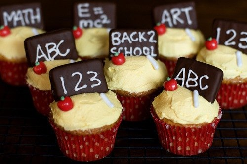
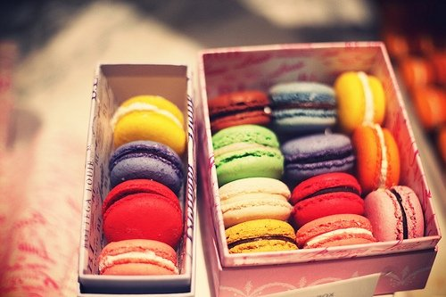
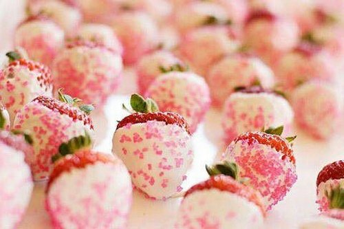
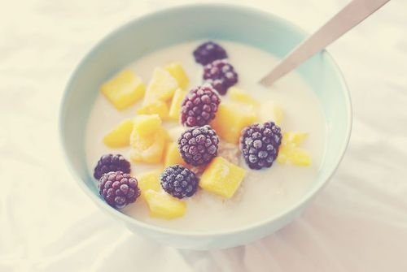

Shop for the Best
With our carefully curated vendor list, you'll know what to buy.
-
Tastemakers
Feast your eyes & get recipes!
-
Blog
News, how-tos, stories, and more
-
The A-List
Handpicked, absolute favorites
-
Contribute
We want to hear from you!
-

2016's Best Summer Cookbooks
With the best of the season coming from "orchards, farms and gardens", NPR has put together an impressive collection of 10 summer cookbooks.
-

How to Make Vegetable Chips
About a month ago, I ate almost an entire box of kale chips. My brother and I were visiting our cousin in Brooklyn, and before a very thoughtfully prepared vegan…
-

Recipes from a Sunday Supper
If I could curate a cookbook for you, this would be it.
-

Recipes from a Sunday Supper
I could not figure out what to do with the delectable slices of Pear Cake that I brought home from this wonderful Sunday supper - eat them slowly, a little bit at…